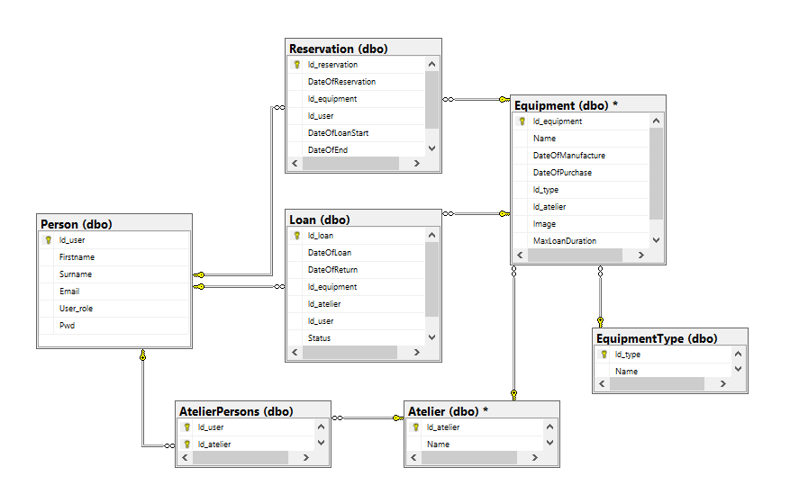

Umělecká škola
- Autoři
-
Marek Čupr
xcuprm01@stud.fit.vutbr.cz
- dokumentace, převážně implementace logiky spojené s učitelem a uživatelem, analýza a návrh informačního systému.
-
Jindřich Halva
xhalva05@stud.fit.vutbr.cz
- napojení databáze, převážně implementace logiky spojené s administrátorem a správcem ateliéru, analýza a návrh informačního systému.
Implementace
Projekt je implementován pomocí ASP.NET Core 8.0 v jazyce C#. Hlavní části implementace zahrnují:
- Controllers: API pro správu uživatelů, zařízení, rezervací a výpůjček. Obsahuje autentifikaci a autorizaci pomocí
Cookies a role-based přístupu.
- Models: Datové modely pro uživatele, zařízení a rezervace s validací pomocí
DataAnnotations pro zajištění správnosti dat.
- Views: Frontend vytvořený pomocí Razor Views v rámci MVC architektury, s integrací Bootstrapu pro responzivní design.
Databáze

Instalace
- Instalace na server:
- Stáhněte a nainstalujte .NET SDK 8.0.
- Nainstalujte SQL Server a vytvořte novou databázi.
- Upravte připojovací řetězec v souboru
appsettings.json pro připojení k databázi.
- Spusťte migrace pro vytvoření tabulek v databázi:
dotnet ef database update.
- Publikujte aplikaci pomocí příkazu
dotnet publish a přeneste ji na server.
- Na webovém serveru nakonfigurujte směrování aplikace a zaručte správné spuštění.
- Softwarové požadavky:
- .NET SDK 8.0
- SQL Server
- Webový server pro hostování aplikace
- Visual Studio
Známé problémy
- Učitelé nemohou přímo zakázat vypůjčení zařízení. Lze to však obejít tím, že si zařízení sami zarezervují.